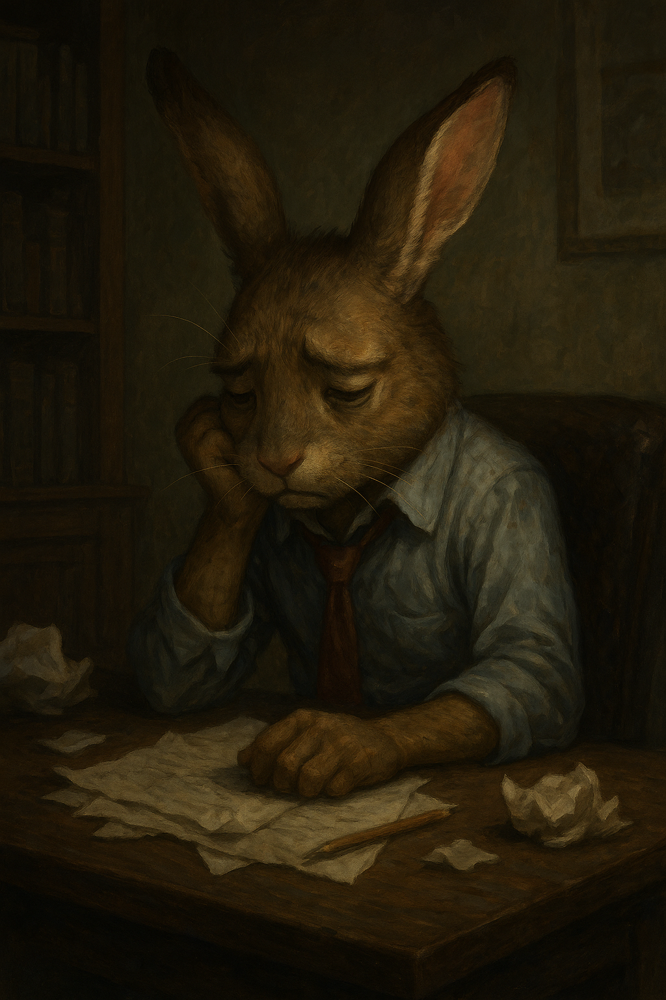

仕事を精一杯頑張ったのに、結果が出ないどころか逆に怒られてしまった──。
そんなとき、「もうこの仕事は嫌だ」と感じるのは、決して弱さではなく自然な心の反応です。
このようなつらい経験をどう乗り越えればよいか、心理学と聖書の両面からアドバイスをお届けします。
「もう無理だ」「つらい」と思ったとき、まず大切なのは自分の感情を否定しないことです。
心にフタをすると、やがてストレスが限界を超え、バーンアウト（燃え尽き）につながってしまいます。
「今はつらい。でも、それは自然なことなんだ」と受け入れることが、回復への第一歩です。
セルフ・コンパッション理論（Kristin Neff）は、自分に対して優しく共感的に接することが、長期的な心の健康に役立つと提唱しています。
「怒られた」「評価されなかった」ことを、別の角度から見てみましょう。
心理学では、「出来事」そのものよりも“どう意味づけするか”が、ストレスの感じ方を大きく左右すると言われています（ラザルスのストレス理論）。
失敗した直後に「どうせ自分はダメだ」と思ってしまうのは、極端な自動思考のパターンです。
紙に書き出し、「本当にそうだろうか？証拠は？」と問い直すことで、冷静なバランスを取り戻せます。
信頼できる人に思いを話すことで、心の中にたまった感情が浄化されます。
家族や友人、あるいはカウンセラーでもOK。日記に書くだけでも、思考の整理につながります。
「なぜこの仕事を選んだのか」「本当は何を大切にしたいのか」を振り返ってみましょう。
もし今の仕事が自分の価値観と大きくズレているなら、転職も含めた選択を検討してよい時期かもしれません。
「いやだ」と感じたら、無理をせず一時的に休む、距離を取ることも大切です。
逃げることは「負け」ではなく、自分を守るための大切な戦略です。
| アプローチ | ポイント |
|---|---|
| 心理学的支援 | 感情を認め、思考を整え、自分の価値観に戻る |
| 聖書的視点 | 神は心を見てくださり、努力は無駄ではない |
| 実践的行動 | 話す・書く・休む・再考する |
💡 一言メッセージ
つらい今こそ、自分と向き合い、人生の舵を取り戻すチャンスです。
あなたの誠実な努力は、決して無駄ではありません。